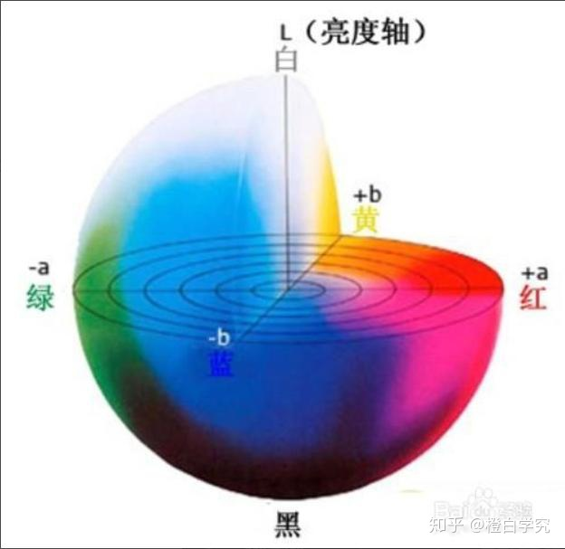
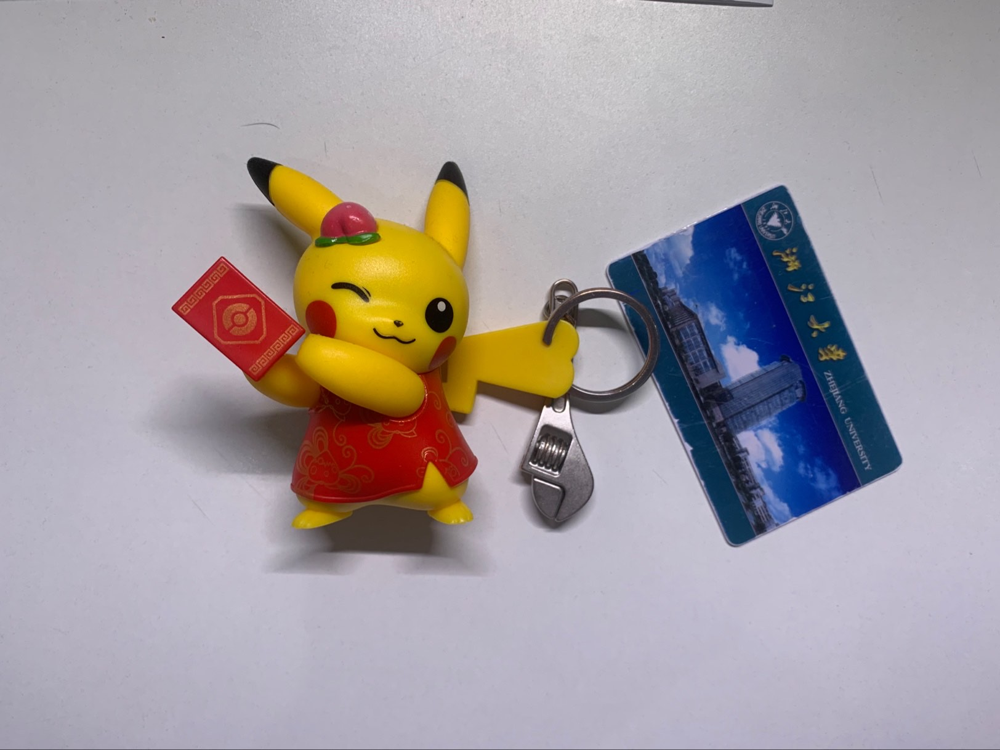
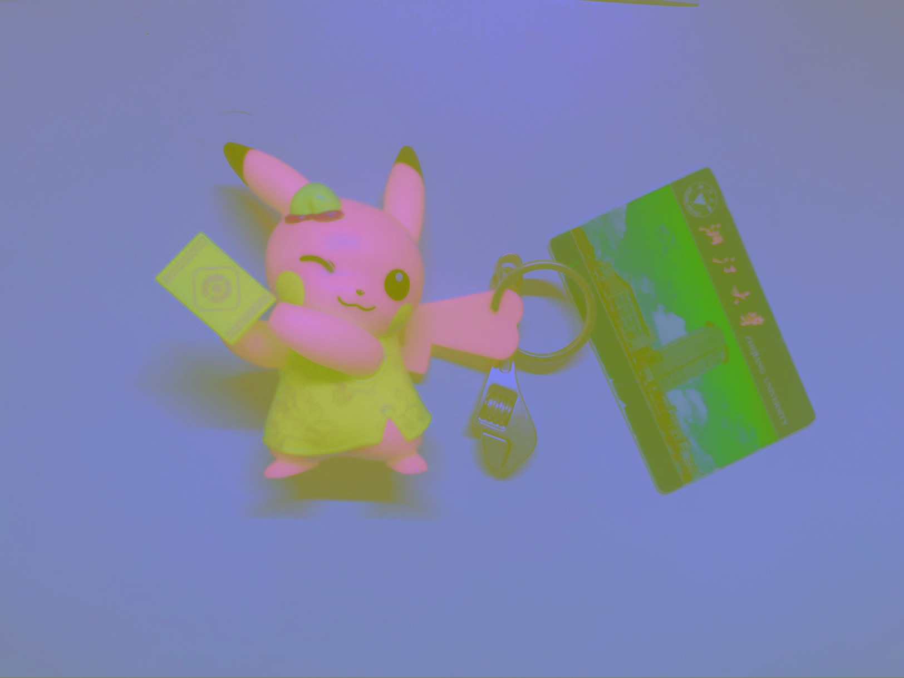
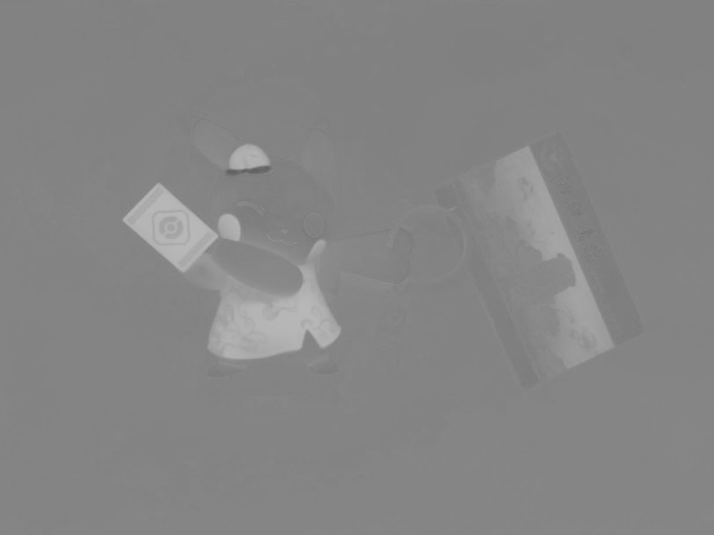

Lab颜色模型以及通道划分
Lab颜色模型以及通道划分
在阿里实习的时候发现他们使用红黄的板子来在视觉的情况下进行分割与检测,其中代码中对原始图像使用了Lab的通道划分
Lab简介
RGB是用于屏幕显示和视频输出，CMYK是用于打印的，HSB是一种直观的观察方法.
Lab的全称是CIELAB，有时候也写成CIE L*a*b*, 这里的CIE代表International Commission on Illumination（国际照明委员会），它是一个关于光照、颜色等的国际权威组织。
它是一种设备无关的颜色模型，也是一种基于生理特征的颜色模型。Lab是由一个亮度通道（channel）和两个颜色通道组成的。在Lab颜色空间中，每个颜色用L、a、b三个数字表示，各个分量的含义是这样的：
L*代表明度，取值0~100
- a*代表从绿色到红色的分量 ，取值-128~127
- b*代表从蓝色到黄色的分量，取值-128~127
这样规定是根据人类的视觉原理，灵长类动物的视觉都有两条通道：红绿通道和蓝黄通道，大多数动物最多只有一条通道，如果有人缺失其中一条，就是我们所说的色盲。

PS从一种颜色模式转换到另一种颜色模式时，总是先转换到Lab模式, 同时Lab色域是所有颜色模式中最宽广的，它囊括了RGB和CMYK的色域。
OpenCV中Lab使用
在实际使用过程中主要是用Lab颜色模型来区别红色和黄色.
具体在使用过程中可以使用OpenCV中的cv::COLOR_BGR2Lab来对rgb图片进行转换
在OPencv中可以将Lab三个通道分开来,其中a和b的通道色阶0-255表示了实际取值-128-127
测试图像
测试图像如下,其中有红黄蓝三种颜色

Lab各个通道图像
使用OpenCV分解之后获得的Lab图像
Lab图像
首先先是从RGB转到Lab的图像

L图像
L通道图像表示明度,看上去就和灰度图差不多
a图像
a轴主要是红绿分量,所以在a图像中,皮卡丘衣服是红色的所以会值比较高(比较白)其余的就会被掩盖

b图像
b轴主要是黄蓝分量,所以黄色的部分就会白一点(值高一点),而饭卡蓝色的部分就会值很低一点
如果做个翻转,结果会更明显
代码
1 |
|